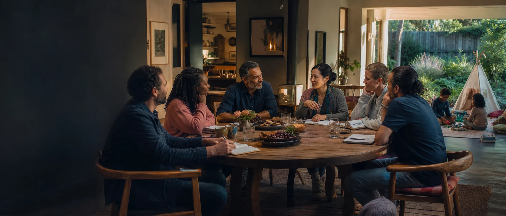

Individual voice
Each adult speaks for their own desires, boundaries, health, friendships, work and conscience.

A strong group marriage is made of whole people. Love deepens when voice, privacy, desire, responsibility and the freedom to change remain alive inside the family.
Concept artwork
Self-sovereignty means keeping your voice, privacy and ability to make choices while you build a life with others.
Each adult speaks for their own desires, boundaries, health, friendships, work and conscience.
Every bond develops its own language for time, intimacy, disclosure, care and change.
Shared decisions include the people who carry their effects, with clear ways to slow down and think again.
Family decisions give weight to children’s safety, trusted relationships, development and growing ability to express what they want.
A loving family has shared life and private rooms, conversations, friendships, devices, thoughts and moments of solitude.
Consent depends on the situation and the continuing freedom to change your mind. People can keep discussing what they want as their lives change.
Money, housing, age, health, migration status, fertility, language and social standing affect how freely someone can choose. A household can acknowledge those differences and work out how everyone gets a say.
Independent money, private support networks, written property interests, separate legal advice and realistic exit plans help people choose when and how to rely on one another.
What has changed in the people, relationships, children or wider world?
What does each person actually want, fear, need or no longer consent to?
Which agreement, resource or rhythm needs to change?
What action restores trust, dignity and practical safety?
A relationship may change while parenting, friendship, housing, property and care continue. Talking through those possibilities early gives people more options if they need to change their arrangements.
Portable records and clear data permissions can help people carry their knowledge, choices and agreed responsibilities through a change in household, device or provider.